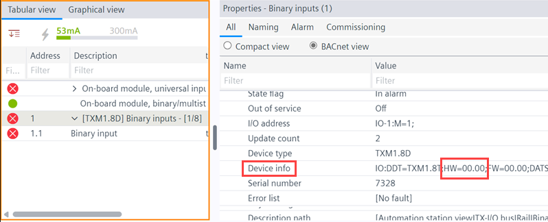
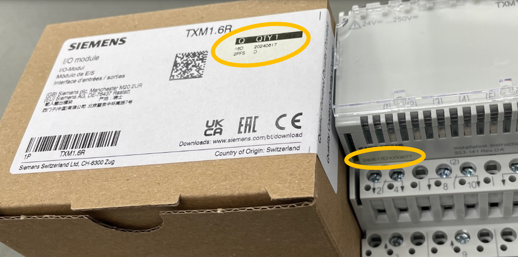
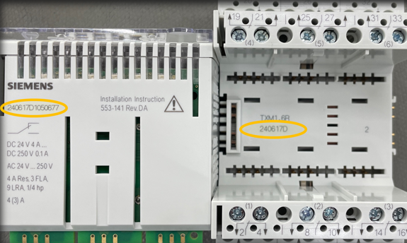
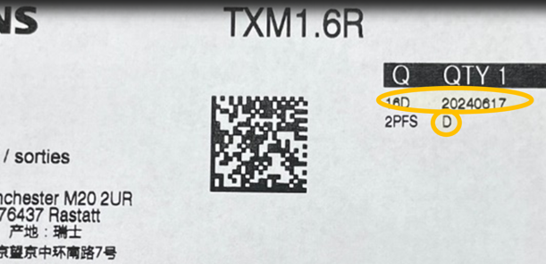

TX/IO 兼容性
TX/IO 模块的硬件版本可以通过其相应的系列轻松解释。

TX/IO 硬件版本可在属性中找到Device info。该物业Device info仅是在线财产。

系列 | 硬件版本 |
|---|---|
Z系列 | 00 |
A系列 | 01 |
B系列 | 02 |
C系列 | 03 |
D系列 | 04 |
E系列 | 05 |
系列信息在设备上可见。硬件版本是在线属性。
Find a serial number on the TXM module

How to read the numbers

例如，设备上的序列号为 240617D1050677：
- 24 - last two digits of the year (2024)
- 06 - month (June)
- 17 - day (17th day of June)
- D - series (see table above)
- 1050677 - unique number for model type
How to read the numbers from the packaging label

例如，D代表系列（见上表），20240617代表：
- 2024 - year
- 06 - month (June)
- 17 - day (17th day of June)